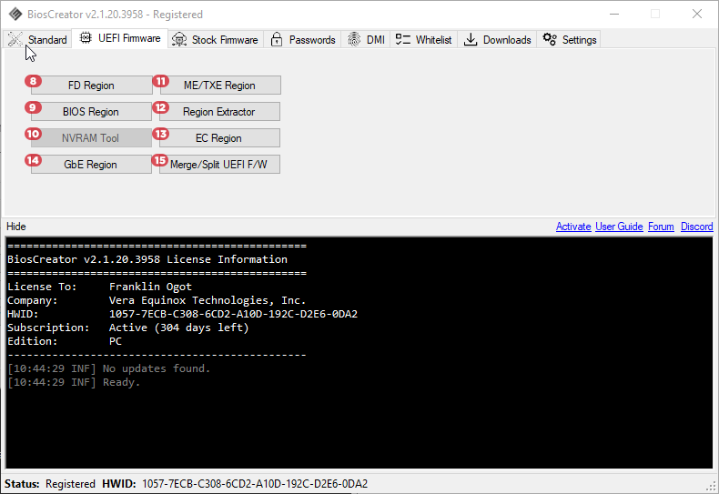
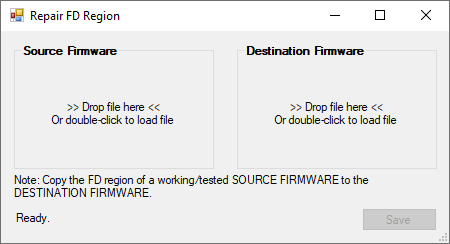
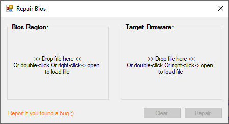
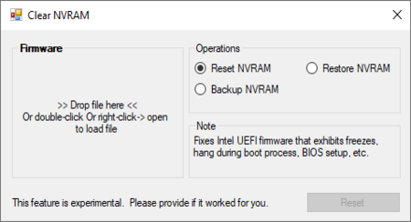
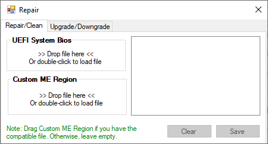
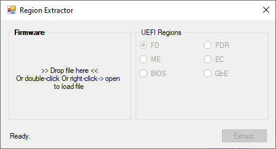
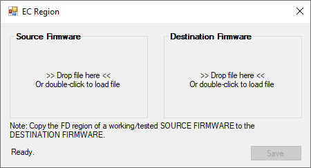
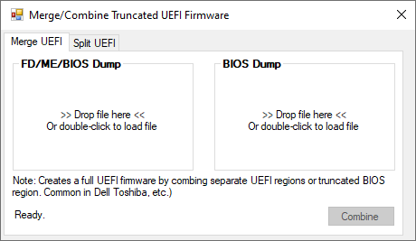

<style>
    .center {
        display: block;
        margin-left: auto;
        margin-right: auto;
        width: 50%;
      }

    a {
      text-decoration: none;
      display: inline-block;
      padding: 8px 16px;
    }
    
    a:hover {
      background-color: #ddd;
      color: black;
    }
    
    .previous {
      background-color: #f1f1f1;
      color: black;
    }
    
    .next {
      background-color: #160042;
      color: white;
    }
    </style>

<section class="support section bg-gray">
	<div class="container">
    <div class="container" style="text-align:justify; margin-bottom:50px;">
      <h4 class="join">UEFI Firmware Tools</h4>
      <p>This functions are generally used for cleaning, replacing FD, ME/TXE and Bios regions of a UEFI firmware.</p>
      
      <br>
      <h2>8. FD Region</h2>
      <p>For more information, kindly click this link.</p>
      
      <br>
      <h2>9. BIOS Region</h2>
      <p>Tool for replacing Bios Region. This utility is helpful for fixing issues that mere cleaning of ME/TXE region can't fix. Commonly used for Asus and Dell UEFI firmware. For more information, kindly click this link.</p>
      
      <br>
      <h2>10. NVRAM Tool</h2>
      <p>This feature allows the user to fix hang to logo, POST or OS initialization in laptops and PCs.</p>
      
      <br>
      <h2>11. ME/TXE Region</h2>
      <p>Tool for repairing and cleaning (resetting initialization data) of ME/TXE region. It also supports custom ME region which is common for Dell bios update file. For more information, kindly click this link.</p>
      
      <br>
      <h2>12. Region Extractor</h2>
      <p>This feature allows the user to extract FD, ME/TXE, and BIOS Region from UEFI Firmware.</p>
      
      <br>
      <h2>13. EC Region</h2>
      
      <br>
      <h2>14. GBE Region</h2>
      
      <br>
      <h2>15. Merge/Split UEFI F/W</h2>
      
      <br>
    <a href="{{ site.baseurl }}/bios-creator/standard-tools" class="previous">&laquo; Previous</a>
    <a href="{{ site.baseurl }}/bios-creator/stock-firmware-tools" class="next">Next &raquo;</a>

		</div> <!-- End row -->
	</div> <!-- End container -->
</section> <!-- End section -->